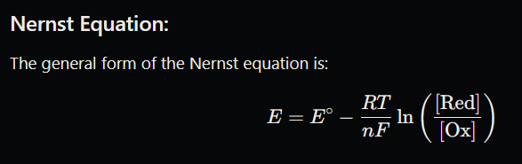

Fuels are materials that release energy through chemical reactions, primarily combustion, and are essential for generating heat and power. They are commonly classified into solid, liquid, and gaseous fuels—each with specific applications and properties. Two important metrics for assessing fuel energy content are Gross Calorific Value (GCV) and Net Calorific Value (NCV), which help measure the total and usable energy released during combustion, respectively. In coal-based fuels, proximate analysis evaluates properties like moisture, ash content, and fixed carbon to determine coal quality.
1) Classification of fuels:-
1. Based on Physical State
Solid Fuels: Examples include coal, wood, peat, and biomass. Solid fuels are often used in power plants, industrial furnaces, and residential heating.
Liquid Fuels: Examples include gasoline, diesel, kerosene, and fuel oil. These are common in transportation, heating, and some industrial applications.
Gaseous Fuels: Examples include natural gas, hydrogen, propane, and biogas. These are often used in heating, cooking, power generation, and as a cleaner alternative in industrial processes.
2. Based on Source
Natural Fuels: Derived directly from nature with minimal processing, such as wood, coal, petroleum, and natural gas.
Artificial (or Processed) Fuels: Manufactured or refined from natural sources to improve performance or energy content, such as coke (from coal), charcoal (from wood), and synthetic fuels like biodiesel and ethanol.
3. Based on Renewability
Renewable Fuels: Derived from sources that are replenishable, like biomass, biodiesel, ethanol, hydrogen from renewable methods, and biogas.
Non-Renewable Fuels: Derived from finite sources that take millions of years to form, like coal, petroleum, and natural gas.
4. Based on Calorific Value
High Calorific Value Fuels: Fuels that release a large amount of energy per unit mass, such as gasoline, natural gas, and diesel.
Low Calorific Value Fuels: Fuels with lower energy content, such as wood and some types of biomass. These are often more sustainable but may require larger quantities for the same energy output as high-calorific fuels.
2) GCV and NCV:-
Gross Calorific Value (GCV) and Net Calorific Value (NCV) are measurements of the energy content in fuels, which indicate the total and usable energy that can be released upon combustion.
1. Gross Calorific Value (GCV):-
•Definition: GCV, also known as the Higher Heating Value (HHV), represents the total amount of energy produced by the complete combustion of a fuel, including the latent heat of vaporization of water.
•Measurement: GCV assumes that all products of combustion are cooled down to the original temperature and that the water vapor produced during combustion is fully condensed.
•Applications: GCV is commonly used for scientific and research purposes to get the maximum energy output of a fuel, though in practical applications, not all of this energy is typically harnessed.
3) Analysis of coal:
Coal analysis involves evaluating the physical and chemical properties of coal to determine its suitability for specific applications, such as electricity generation, steel manufacturing, and heating. The analysis of coal includes two main types: proximate analysis and ultimate analysis.
1. Proximate Analysis
Proximate analysis is a quick assessment of coal’s fundamental properties, providing information about:
•Moisture Content: Determines the amount of water in the coal, affecting its heating value.
•Volatile Matter: Measures the compounds released when coal is heated, which influences combustion efficiency and reactivity.
•Fixed Carbon: Indicates the amount of combustible material left after volatile matter is driven off, representing the fuel content.
•Ash Content: Represents the non-combustible residue left after combustion, affecting furnace operation and emissions.
2. Ultimate Analysis
Ultimate analysis provides a deeper insight into the chemical composition of coal, focusing on:
•Carbon (C): Major component influencing energy content and carbon emissions.
•Sulfur (S): A pollutant that forms sulfur dioxide (SO₂) when burned, requiring emissions control.
•Oxygen (O): Part of the coal's structure, influences the energy content but less directly.
•Hydrogen (H): Contributes to combustion and energy release.
•Ash and Trace Elements: Elements like mercury, lead, and arsenic are trace pollutants that need regulation in emissions.
3. Calorific Value
The calorific value, or heating value, measures the energy released when coal is burned. Higher values indicate a more energy-efficient fuel source.
4. Applications:
Coal analysis aids in selecting coal types for power plants, optimizing combustion efficiency, and reducing pollutants. The process is essential for industries that depend on consistent fuel quality and for regulatory compliance in emissions.
4) Lithium-ion battery:
Lithium-ion batteries (Li-ion) are a type of rechargeable battery widely used for energy storage in a range of applications, from consumer electronics (like smartphones and laptops) to electric vehicles (EVs) and large-scale grid storage. They are popular because of their high energy density, long cycle life, and relatively low self-discharge rate.
Key Components of Lithium-Ion Batteries:-
•Anode: Typically made of graphite, the anode stores lithium ions during the charging phase. During discharge, lithium ions move from the anode to the cathode, releasing energy.
•Cathode: Made from lithium-based compounds, such as lithium cobalt oxide (LiCoO₂) or lithium iron phosphate (LiFePO₄), the cathode plays a major role in determining the battery's capacity, voltage, and stability.
•Electrolyte: The liquid or gel electrolyte enables lithium ions to move between the anode and cathode. It typically consists of a lithium salt, like LiPF₆, dissolved in a solvent.
•Separator: A thin, porous material that prevents direct contact between the anode and cathode, avoiding short circuits while allowing ions to pass through.
How Lithium-Ion Batteries Work:
•Charging: During charging, an external electric current forces lithium ions to move from the cathode to the anode through the electrolyte. This stores energy in the battery.
•Discharging: When the battery is in use, lithium ions travel from the anode back to the cathode, generating an electric current that powers the connected device.
5)Solar Battery:
A solar battery is a type of rechargeable battery designed to store energy generated by solar panels. By storing excess solar power produced during the day, solar batteries enable continuous power usage, even at night or during cloudy periods, improving energy independence and efficiency for households and businesses.
How Solar Batteries Work:
•Solar batteries are integrated into a solar energy system with solar panels and an inverter. Here’s a basic overview of their function:
•Solar Panel Generation: During daylight, solar panels convert sunlight into electricity.
•Energy Storage: The electricity generated is either used to power the building directly or stored in the solar battery. When the system produces more electricity than needed, the excess power is diverted to the battery for later use.
•Power Supply: At night or during low-sunlight conditions, the stored energy is drawn from the battery to supply power, making it possible to run electrical devices without relying on the grid.
Types of Solar Batteries:
•Lithium-Ion: Currently the most popular choice due to high energy density, long cycle life, and efficiency. Lithium iron phosphate (LiFePO₄) batteries are particularly popular in solar applications because of their thermal stability and long lifespan.
•Lead-Acid: Traditional battery technology, known for reliability and cost-effectiveness. These batteries are widely used in off-grid systems but have shorter lifespans and lower energy densities compared to lithium-ion.
Saltwater Batteries: Environmentally friendly and non-toxic, these batteries use saltwater electrolytes and are fully recyclable. However, they are less commonly used and have lower energy density than lithium-ion batteries.
Advantages of Solar Batteries:
•Energy Independence: By storing excess solar energy, users can rely less on the grid, especially in areas with high electricity costs or unreliable power.
•Cost Savings: Solar batteries reduce electricity bills by enabling the use of stored energy during peak rate times, a concept known as "load shifting."
•Environmental Impact: Solar batteries contribute to reducing fossil fuel dependency by maximizing the use of renewable solar energy.
•Backup Power: Solar batteries provide backup power during outages, ensuring continuous electricity supply for essential devices and appliances.
6) Electrochemical Sensors:
Electrochemical sensors are devices that detect chemical changes through electrical signals, making them ideal for a wide range of applications, including environmental monitoring, medical diagnostics, food quality assessment, and industrial processes. These sensors are sensitive, compact, and capable of detecting specific chemical compounds, making them invaluable tools in situations where precise and real-time monitoring is essential.
How Electrochemical Sensors Work:
•Working Electrode: Where the target analyte undergoes an electrochemical reaction (oxidation or reduction). This electrode is often made from conductive materials like platinum, gold, or carbon.
•Counter Electrode: Completes the circuit with the working electrode, allowing current to flow.
•Reference Electrode: Provides a stable voltage reference to ensure accurate measurements by maintaining a constant potential against which the working electrode operates.
Applications of Electrochemical Sensors:
•Medical Diagnostics:
Glucose Sensors: Measure blood glucose levels, essential for diabetes management.
Electrolyte Sensors: Detect levels of sodium, potassium, and calcium in blood.
Oxygen Sensors: Used in medical settings to monitor oxygen levels in the blood.
•Environmental Monitoring:
Gas Sensors: Detect toxic gases like carbon monoxide, sulfur dioxide, and nitrogen dioxide in the air.
Water Quality Sensors: Measure pH, dissolved oxygen, and contaminants like heavy metals in water.
•Industrial Applications:
Process Monitoring: Control and monitor chemical processes by measuring concentrations of reactants and products.
Corrosion Monitoring: Detect corrosion rates in pipelines, reducing maintenance costs and improving safety.
•Biochemical Research:
Used in drug development, pathogen detection, and biological studies to analyze enzyme activities and biomolecular interactions.
✒ 𝐔𝐧𝐢𝐭 𝟐:-
Advanced Engineering Materials:
Advanced Engineering Materials refers to high-performance materials developed to meet the rigorous demands of modern engineering applications. These materials offer superior properties like high strength, lightweight, durability, corrosion resistance, and sometimes unique functional properties (e.g., self-healing, shape memory). They are essential in sectors such as aerospace, automotive, biomedical, electronics, and energy.
1) Industrial Polymers: Properties and applications of Thermoplastics (PVC) & Thermosetting polymers (Bakelite) Electronic polymers – introduction
Industrial Polymers are synthetic materials commonly used in manufacturing and industry due to their adaptability, durability, and cost-effectiveness. Polymers are broadly categorized into thermoplastics and thermosetting polymers, each with unique properties and applications.
Thermoplastics: PVC (Polyvinyl Chloride)
Properties:
•Flexibility and Versatility: PVC can be made flexible or rigid, allowing it to be used in a wide range of applications.
•Chemical and Corrosion Resistance: Resistant to acids, alkalis, and salts, making it ideal for chemical storage and transport.
•Electrical Insulation: Good insulator, commonly used in electrical wiring.
•Low Cost and Lightweight: Affordable and easy to mold, cut, and shape.
•Durability and Fire Resistance: Long-lasting with decent fire-resistant properties when additives are included.
Applications:
•Construction: Used in pipes, windows, flooring, and roofing due to its durability and resistance to weathering.
•Electrical: Commonly used as insulation for electrical cables and wire sheathing.
•Healthcare: Used in medical tubing, blood bags, and IV containers because it’s chemically inert and can be sterilized.
•Consumer Goods: Found in products like credit cards, toys, and packaging.
Thermosetting Polymers: Bakelite
Properties:
•Hard and Brittle: Once set, Bakelite cannot be reshaped and has a high level of rigidity.
•Heat Resistance: Excellent thermal stability, suitable for high-temperature applications.
•Electrical Insulation: An outstanding insulator, resistant to electricity.
•Chemical Resistance: Resistant to solvents and other chemicals, increasing its durability.
•Non-flammable: It does not catch fire easily, adding a layer of safety.
Applications:
•Electronics and Electrical: Used in electrical insulators, switches, and sockets because of its non-conductive nature.
•Automotive: Utilized in distributor caps and other under-hood components due to its thermal stability.
•Household Goods: Found in kitchenware, handles for pots and pans, and older telephones due to its heat resistance and ease of molding.
•Industrial Applications: Used in various high-temperature applications where rigid, durable components are necessary.
Electronic Polymers – Introduction
Electronic Polymers are specialized polymers designed to exhibit electrical properties such as conductivity, semiconductivity, or dielectric properties. Unlike traditional polymers, these materials can conduct or control electricity, making them essential in electronics and optoelectronics.
Properties:
•Conductivity: Polymers like polyaniline and polythiophene can conduct electricity, making them suitable for circuits and flexible electronics.
•Flexibility and Processability: These polymers are lightweight and can be molded into complex shapes, ideal for wearable electronics.
•Thermal and Environmental Stability: Electronic polymers are engineered to maintain stability under various environmental conditions, crucial for reliable device performance.
Applications:
•Flexible Electronics: Used in flexible displays, sensors, and wearable devices.
•Organic Light Emitting Diodes (OLEDs): In screens and lighting due to their efficient light-emitting properties.
•Solar Cells: Organic photovoltaic cells utilize electronic polymers for energy conversion.
•Transistors and Sensors: Applied in organic field-effect transistors (OFETs) and biosensors for healthcare monitoring and diagnostics.
2) PTFE
PTFE, commonly known by the brand name Teflon, is a synthetic fluoropolymer of tetrafluoroethylene. It is widely used in industries ranging from manufacturing to medical applications due to its exceptional chemical resistance and other properties. Below are its key features and uses:
Properties of PTFE:
•Non-Stick Surface: PTFE is known for its non-stick properties, making it ideal for cooking pans and other applications where surface friction needs to be minimized.
•Chemical Resistance: PTFE is highly resistant to almost all chemicals, including acids, bases, and solvents. This makes it valuable in chemical processing applications.
•Heat Resistance: PTFE can withstand extremely high temperatures (up to around 260°C or 500°F), making it suitable for high-temperature environments.
•Electrical Insulation: Due to its non-conductive nature, PTFE is often used as insulation in electrical wires and cables.
•Low Friction: PTFE has a very low coefficient of friction, which makes it useful in applications where reduced friction is important (e.g., bearings, sliding parts).
•Durability: It has excellent mechanical strength and can withstand wear and tear in demanding environments.
Applications of PTFE:
•Non-Stick Cookware: PTFE is widely used in the coating of cookware like frying pans and baking trays.
•Electrical Insulation: PTFE-coated wires and cables are commonly used in industries that require high heat resistance and electrical insulation, such as aerospace and automotive sectors.
•Gaskets and Seals: PTFE is used for making seals and gaskets in industrial applications, especially where high chemical resistance is required.
•Medical Devices: Due to its non-reactivity, PTFE is used in medical devices such as catheters and implants.
•Bearings and Bushings: PTFE is used in mechanical systems to reduce friction and wear in bearings and bushings.
•Pipes and Fittings: PTFE is used in piping systems for handling aggressive chemicals in industries like pharmaceuticals, food processing, and chemical manufacturing.
3) Polypyrrole - Properties and Applications
Polypyrrole (PPy) is a type of conducting polymer that exhibits electrical conductivity and can be synthesized through the polymerization of pyrrole, a heterocyclic aromatic compound. It is widely studied for its potential applications in various fields due to its unique combination of properties.
Properties of Polypyrrole (PPy):
Electrical Conductivity:
Conductivity is one of the key features of polypyrrole, as it can conduct electricity similar to metals but with the flexibility of polymers. This makes it useful in applications where lightweight and flexible conductive materials are needed.
Stability:
Polypyrrole exhibits good environmental stability compared to other conducting polymers. It can maintain its conductivity over a range of temperatures and environmental conditions.
Flexibility and Processability:
Unlike traditional metallic conductors, polypyrrole is flexible and easy to process. This makes it ideal for applications that require bendable or stretchable conductive materials.
Biocompatibility:
Polypyrrole is often considered biocompatible, which makes it suitable for biomedical applications where compatibility with biological systems is essential.
Environmental Sensitivity:
It has sensitivity to external factors like humidity, temperature, and gases, which makes it useful for environmental sensors.
Conductive Films and Coatings:
Polypyrrole can be deposited in the form of thin films or coatings, which are used to impart electrical conductivity to other materials like plastics or textiles.
Applications of Polypyrrole (PPy):
Energy Storage:
Supercapacitors: Polypyrrole is used in energy storage devices like supercapacitors, where its high electrical conductivity and charge storage capabilities are utilized.
4) Electroceramics – Introduction, classification
Electroceramics are materials that possess electrical properties such as electrical conductivity, dielectric behavior, piezoelectricity, ferroelectricity, and superconductivity. These properties make them crucial for use in modern electronics and electrical devices, ranging from communication devices to energy storage systems. They are often used in applications where conventional metallic conductors or polymers may not perform as well under certain conditions.
Classification of Electroceramics:
Electroceramics can be classified based on their electrical properties and applications. The primary categories include:
1.Dielectric Ceramics:
These materials are characterized by their ability to store electrical energy when subjected to an electric field. They are used in capacitors and insulators.
Piezoelectric ceramics generate an electrical charge when mechanical stress is applied and vice versa. They are widely used in sensors, actuators, and transducers.
Examples: Lead zirconate titanate (PZT), barium titanate (BaTiO₃).
3.Ferroelectric Ceramics:
These materials exhibit spontaneous polarization that can be reversed by applying an external electric field. They are used in memory devices and sensors.
Examples: Lead titanate (PbTiO₃), barium titanate (BaTiO₃).
4.Magnetoelectric Ceramics:
These materials show a coupling between magnetic and electric properties. They are useful in sensors and actuators.
Examples: Composites like BaFe₁₂O₁₉ (barium ferrite).
5.Superconducting Ceramics:
These materials exhibit zero electrical resistance when cooled below a certain temperature, making them ideal for energy-efficient power transmission and high-field magnets.
Capacitors: Dielectric ceramics are used for energy storage.
Sensors & Actuators: Piezoelectric ceramics are employed in sensors, actuators, and transducers.
Ferroelectric Devices: Used in memory storage devices, particularly in ferroelectric RAM (FeRAM).
Magnetic Materials: Used in magnetic sensors and actuators.
Energy Storage: Superconducting ceramics are used in energy-efficient devices.
Varistors: Protect electrical circuits from voltage surges.
5) Ferrite –Properties and applications
Ferrite refers to a class of ceramic materials composed primarily of iron oxide (Fe₂O₃) mixed with other metallic elements like manganese (Mn), zinc (Zn), nickel (Ni), or cobalt (Co). Ferrites are known for their magnetic properties and are commonly used in a wide range of applications, particularly in electronics.
Properties of Ferrites:
1.Magnetic Properties:
Ferrites are ferromagnetic or ferrimagnetic materials, meaning they can be magnetized and are used in the production of permanent magnets.
They exhibit high magnetic permeability, which allows them to be efficient at conducting magnetic fields in devices.
2.Electrical Insulation:
Ferrites are electrical insulators, meaning they do not conduct electricity. This makes them suitable for use in high-frequency applications where the electrical conductivity of metals might cause losses.
3.High Resistivity:
Ferrites have high electrical resistivity, which reduces eddy current losses in electrical devices.
4.Good High-Frequency Properties:
They maintain their magnetic properties even at high frequencies, making them ideal for high-frequency applications such as transformers and inductors.
5.Corrosion Resistance:
Ferrites generally have good resistance to corrosion, which makes them durable for use in harsh environmental conditions.
Mechanical Strength:
Ferrites are hard and brittle, with relatively good mechanical strength. However, they should be handled with care as they can crack under pressure.
Applications of Ferrites:
1.Magnetic Cores:
Ferrites are widely used in the manufacturing of magnetic cores for transformers, inductors, and magnetic coils. The high permeability and low eddy current losses make them ideal for these applications.
2.Electromagnetic Interference (EMI) Suppression:
Ferrite beads and cores are used to suppress electromagnetic interference (EMI) in electronic circuits, ensuring stable performance of devices by reducing noise.
3.High-Frequency Transformers:
Due to their high-frequency magnetic properties, ferrites are used in transformers that operate at high frequencies, such as those found in power supplies, RF circuits, and communication devices.
4.Microwave and Radio Frequency (RF) Devices:
Ferrites are essential in applications involving microwaves and radio frequencies. They are used in devices like isolators, circulators, and phase shifters.
5.Permanent Magnets:
Ferrites are often used in the production of permanent magnets for electric motors, speakers, and sensors, especially where a low-cost and robust material is required.
6.Data Storage:
Ferrite materials are used in magnetic recording media, including hard disk drives and magnetic tapes, for data storage.
✒ 𝐔𝐧𝐢𝐭 𝟑:-
Water Technology
Water Technology focuses on techniques for ensuring safe and clean water. One key aspect is water hardness, caused by calcium and magnesium ions, measured in units like ppm or mg/L. The EDTA method estimates hardness by binding these ions. Water treatment processes such as ion exchange, which replaces harmful ions, electrodialysis, which separates ions using an electric field, and reverse osmosis, which filters out contaminants through a semi-permeable membrane, are vital for purifying water for various uses. These methods ensure water quality for drinking and industrial purposes.
1) Water Parameters: Hardness of water: types and units
Water Hardness refers to the concentration of dissolved minerals, primarily calcium (Ca²⁺) and magnesium (Mg²⁺) ions, in water. It is typically measured in units such as:
1.Milligrams per liter (mg/L) or parts per million (ppm): This is the most common unit, representing the amount of calcium carbonate (CaCO₃) equivalent dissolved in water.
2.Degrees of Hardness: Measured in °dH (degrees German hardness), °fH (French hardness), or grains per gallon (gpg), which is commonly used in the U.S.
1°dH = 10 mg/L CaO
1 gpg = 17.1 mg/L
Water hardness is categorized into:
Soft Water: 0–60 mg/L
Moderately Hard: 61–120 mg/L
Hard Water: 121–180 mg/L
Very Hard Water: >180 mg/L
2) Estimation of hardness by EDTA method
The EDTA method is a common and accurate way to estimate water hardness. EDTA (ethylenediaminetetraacetic acid) is a chelating agent that binds to metal ions like calcium and magnesium, which are responsible for water hardness.
Steps for Estimation:
1.Sample Preparation: A water sample is taken for analysis.
2.Buffering: A buffer solution is added to adjust the pH to around 10, which is ideal for the reaction to occur.
3.Indicator Addition: Eriochrome Black T, a common indicator, is added to the sample. This indicator forms a red complex with calcium and magnesium ions in the sample.
4.Titration with EDTA: EDTA solution is slowly added to the sample. As EDTA binds to the calcium and magnesium ions, the color changes from red to blue, indicating the endpoint.
5.Calculation: The amount of EDTA used to reach the endpoint is directly proportional to the hardness of the water. The hardness can be calculated using the volume of EDTA solution used and its concentration.
The formula for calculating hardness in mg/L as CaCO₃ is:
Hardness = (Volume of EDTA (mL) × Concentration of EDTA (mol/L) × 100,000) / Volume of sample (mL)
3) Water treatment: Ion exchange process
The Ion Exchange Process is a reversible chemical reaction used to exchange specific ions in water with other ions that are more desirable or less harmful. It is commonly used for water softening, deionization, and purification in a wide range of industrial and domestic applications.
Principle of Ion Exchange:
Ion exchange occurs when water comes into contact with a resin that contains ions capable of being swapped with ions in the water. These resins are typically composed of synthetic or natural materials that have charged sites where ions can attach. In the process, the undesirable ions in the water (e.g., calcium, magnesium, iron, or other contaminants) are exchanged with more desirable ions (usually sodium or hydrogen).
Types of Ion Exchange Resins:
Cation exchange resins: These resins are designed to exchange positive ions (cations). They are used to remove hard water ions, such as calcium (Ca²⁺) and magnesium (Mg²⁺), which contribute to water hardness. These ions are replaced with sodium ions (Na⁺) in the softening process.
Anion exchange resins: These resins exchange negative ions (anions). They are used to remove anions such as chloride (Cl⁻), sulfate (SO₄²⁻), or nitrate (NO₃⁻) from water.
Ion Exchange Process Steps:
Regeneration: Over time, the resin becomes saturated with the unwanted ions. The resin must be regenerated using a regenerant solution, which restores the resin's ability to exchange ions. For cation resins, sodium chloride (NaCl) is often used as a regenerant, while for anion resins, sodium hydroxide (NaOH) may be used.
Softening: In water softening, the cation exchange resin exchanges calcium (Ca²⁺) and magnesium (Mg²⁺) ions, which cause hardness, with sodium (Na⁺) ions. This process reduces the hardness of water, making it more suitable for household or industrial use.
Deionization: In some cases, water needs to be completely purified, and this requires both cation and anion exchange. The combination of both types of resins can remove almost all ions from the water, resulting in very high purity (also known as deionized water).
Applications of Ion Exchange:
Water Softening: The most common application is for softening hard water. Hard water contains high levels of calcium and magnesium ions, which can cause scale buildup in pipes and appliances. By replacing these ions with sodium ions, the water becomes softer and less likely to cause scaling.
Water Purification: Ion exchange is also used to remove contaminants such as heavy metals (lead, copper, etc.), radioactive ions, and other harmful substances from drinking water. It is often part of multi-stage water treatment systems.
Industrial Applications: Ion exchange is used to produce ultra-pure water for industries such as pharmaceuticals, electronics, and power generation, where even trace amounts of contaminants can interfere with production processes.
Wastewater Treatment: Ion exchange can be used to remove specific contaminants from wastewater, making it more environmentally friendly for discharge or reuse.
Example of Ion Exchange in Water Softening:
When hard water containing calcium (Ca²⁺) and magnesium (Mg²⁺) flows through a cation-exchange resin, the calcium and magnesium ions are exchanged with sodium (Na⁺) ions from the resin. The process looks like this:
• Ca²⁺ + 2Na resin → Ca resin + 2Na⁺
• Mg²⁺ + 2Na resin → Mg resin + 2Na⁺
4) Electrodialysis and Reverse Osmosis
Electrodialysis (ED) and Reverse Osmosis (RO) are both water treatment processes used to remove dissolved ions and impurities from water, but they work on different principles and are suited for different applications.
1) Electrodialysis (ED):
Principle:
Electrodialysis is an electrochemical process that uses an electric field to drive the movement of ions through ion-selective membranes. These membranes are specially designed to allow either positively charged ions (cations) or negatively charged ions (anions) to pass through. The system uses alternating cation and anion exchange membranes, creating a series of chambers where ions are separated from water by applying an electrical current.
Process:
Electric Field Application: When an electric current is applied across the system, positively charged ions (cations) move towards the negative electrode (cathode), and negatively charged ions (anions) move towards the positive electrode (anode).
Ion-Selective Membranes: These ions pass through the ion-exchange membranes, leaving the rest of the water relatively free of these ions. The ions accumulate in separate chambers, while the treated water, known as the desalted water, is collected.
Desalination: This process is often used for desalting water and treating brackish water, as it is more effective for low salinity water than seawater.
2) Reverse Osmosis (RO):
Principle:
Reverse osmosis is a filtration process that uses a semi-permeable membrane to remove ions, molecules, and larger particles from water. It works by applying pressure to push water through the membrane, which only allows water molecules to pass through, while blocking dissolved salts, contaminants, and other impurities.
Process:
Pressure Application: Water is pressurized to overcome the osmotic pressure of the solution (the natural flow of water from a low-concentration solution to a higher-concentration one).
Semi-Permeable Membrane: The water is forced through the membrane, leaving behind dissolved salts, organic materials, bacteria, and other contaminants. The purified water that passes through the membrane is collected as the product water.
Brine Disposal: The contaminants are concentrated in the reject stream, called brine, which must be disposed of properly.
Feature
Electrodialysis (ED)
Reverse Osmosis (RO)
Working Principle
Uses an electric field to move ions through ion-selective membranes.
Uses pressure to push water through a semi-permeable membrane.
Effective For
Low-salinity water (brackish water), ion removal.
High-salinity water (seawater), broad range of contaminants.
Energy Efficiency
More energy-efficient for low-salinity water.
Energy-intensive, especially for seawater desalination.
Applications
Desalination of brackish water, industrial wastewater, food processing.
Seawater desalination, drinking water purification, industrial use.
Membrane Fouling
Can occur but is less problematic than in RO.
Frequent fouling and scaling, requires regular cleaning.
Water Waste
Generates brine but can handle smaller volumes.
Produces brine that must be disposed of properly.
✒ 𝐔𝐧𝐢𝐭 𝟒:-
Corrosion and its prevention:
Corrosion is the degradation of materials, especially metals, due to chemical or electrochemical reactions with their environment, leading to material loss and structural damage. It can manifest in various forms, such as uniform corrosion, pitting, galvanic corrosion, and stress corrosion cracking. The mechanism of corrosion includes dry corrosion, which occurs in the absence of moisture, and wet corrosion, which involves the electrochemical reaction between metal, water, and oxygen. Corrosion testing methods like computed and digital radiography help detect internal damage. To prevent corrosion, techniques such as electroplating, which coats metals with protective layers, and sacrificial anodic protection, where a more reactive metal protects a less reactive one, are commonly used to enhance the durability and lifespan of metal structures.
Click on Read More Button to know about sub-topics
1) Definition & types:
Definition:
Corrosion is the natural process through which materials, especially metals, degrade or deteriorate due to chemical or electrochemical reactions with their environment, such as moisture, oxygen, and acids. This process leads to the formation of rust or other degradation products, weakening the material and reducing its functionality and lifespan.
Types of Corrosion:
1.Uniform Corrosion: The most common type where the metal corrodes evenly across its surface, such as rusting of iron.
2.Pitting Corrosion: Localized corrosion that forms small holes or pits on the metal surface, often seen in stainless steel.
3.Galvanic Corrosion: Occurs when two dissimilar metals come into electrical contact in the presence of an electrolyte, leading to accelerated corrosion of one metal.
4.Crevice Corrosion: Happens in confined spaces, where the environment is stagnant and more corrosive, such as under gaskets or seals.
5.Stress Corrosion Cracking (SCC): The combined effect of tensile stress and a corrosive environment, leading to cracking and failure of the material.
2) Mechanism of dry and wet corrosion
1.Dry Corrosion:
Dry corrosion, also known as chemical corrosion, occurs in the absence of moisture, typically at elevated temperatures. It involves the reaction between a metal and gaseous substances (such as oxygen, sulfur, or nitrogen) in the environment.
Process:
When a metal, like iron, is exposed to oxygen at high temperatures, an oxide layer forms on the surface. This oxide layer serves as a protective barrier, slowing down further corrosion. However, if the metal continues to react with the gas, it leads to the formation of thick oxide scales that may flake off, exposing fresh metal to corrosion.
Example:
The formation of iron oxide (rust) on iron when exposed to oxygen at high temperatures.
2.Wet Corrosion:
Wet corrosion, or electrochemical corrosion, occurs in the presence of moisture (water or an electrolyte) and involves an electrochemical reaction between the metal and the environment. It is the most common form of corrosion in metals exposed to water, oxygen, or other electrolytes.
>
Process:
In wet corrosion, the metal surface is exposed to water, which acts as an electrolyte. The metal undergoes oxidation at the anode, releasing electrons, and the electrons travel through the external circuit to the cathode, where a reduction reaction occurs (e.g., oxygen reduction). This creates an electrochemical cell, where the metal dissolves at the anode, leading to material loss. Oxygen or other agents present in the water usually help drive the corrosion process.
Example:
The rusting of iron in the presence of water and oxygen, where iron (Fe) reacts with oxygen and water to form iron oxide (rust).
3) Corrosion testing:-methods: computed and digital radiography
1. Computed Radiography (CR):
Computed Radiography (CR) is a non-destructive testing (NDT) method that uses digital technology to capture and store X-ray images for evaluating corrosion and internal defects in materials. CR replaces traditional film-based radiography with a photostimulable phosphor (PSP) plate, which captures the X-ray image. After exposure, the plate is scanned by a laser to produce a digital image, which can be analyzed on a computer. This allows for high-resolution imaging of internal corrosion, welds, and material degradation without causing damage to the specimen.
Advantages:
•Quick and efficient analysis.
•Digital image storage and easy retrieval for future comparisons.
•High-quality images with the ability to adjust contrast and enhance details.
Applications:
•nspecting pipelines, tanks, and structural components for internal corrosion or cracks.
•Identifying pitting or localized corrosion in complex geometries.
2. Digital Radiography (DR):
Digital Radiography (DR) is an advanced form of X-ray imaging that uses digital sensors to capture and store images, instead of traditional photographic film. In DR, a digital detector is used to convert the X-ray data into digital images immediately after exposure. These images can then be displayed, processed, and analyzed on a computer.
Advantages:
Immediate image availability with no need for film development.
Higher resolution images compared to CR, which improves detection of fine details.
Greater ease in image enhancement and analysis (e.g., zooming in, adjusting brightness/contrast).
Less exposure time and lower radiation doses for the subject being tested.
Applications:
Assessing corrosion in industrial components such as pipes, pressure vessels, and storage tanks.
Detecting corrosion under insulation, which is difficult to spot visually.
Monitoring the integrity of welded joints and other structural materials for potential degradation.
Feature
Computed Radiography (CR)
Digital Radiography (DR)
Imaging Technology
Uses photostimulable phosphor (PSP) plates to capture X-ray images.
Uses direct digital detectors (e.g., flat-panel or CCD sensors) to capture X-ray images.
Image Storage
Images are stored digitally after scanning the PSP plate.
Images are stored directly in a digital format, eliminating the need for scanning.
Image Quality
High quality, but less resolution compared to DR.
Superior image quality, higher resolution, and better clarity.
Exposure Time
Longer exposure time due to the need for scanning.
Instant image capture with minimal exposure time.
Processing Time
Requires additional scanning step after exposure, which may take some time.
Instant results with no scanning needed.
Cost
Generally lower equipment cost, but requires scanning equipment.
Higher equipment cost but no need for additional scanning equipment.
Flexibility of Image Processing
Moderate flexibility in enhancing and processing images.
High flexibility for image processing (contrast, zoom, enhancements).
Radiation Dose
Generally higher radiation dose due to longer exposure.
Typically lower radiation dose due to faster imaging process.
Applications
Suitable for simpler applications, like basic inspections.
Ideal for high-resolution, critical inspections (e.g., detecting small defects and fine details).
Equipment Size
Bulkier due to the need for scanning equipment.
More compact and integrated system.
Image Transfer and Sharing
Images need to be transferred from the scanning system to the computer.
Images can be directly viewed and shared digitally, simplifying the process.
Cost Efficiency
More cost-effective for simpler applications.
More expensive, but offers better performance and flexibility.
4) Prevention of corrosion:
Corrosion can be minimized or prevented through various methods, depending on the material, environment, and type of corrosion. The primary goal of corrosion prevention is to protect the metal or material from the electrochemical or chemical reactions that cause degradation. Here are some common methods for preventing corrosion:
Methods:-
1.Electroplating:
Definition:
Electroplating is a process that uses electrical current to deposit a thin layer of metal onto the surface of another material, usually a metal object. This process is commonly used to enhance the appearance, durability, and corrosion resistance of a base metal. The metal being plated is typically an ion in a solution, and it is reduced onto the surface of the workpiece (the object being plated) through electrochemical reactions.
Process of Electroplating:
1.Preparation of the Surface: The object to be plated (called the substrate or workpiece) is thoroughly cleaned to remove dirt, oil, oxidation, and other contaminants. Cleaning methods include abrasive cleaning, acid washing, and ultrasonic cleaning.
2.Electrolyte Solution: The electroplating process requires an electrolyte solution that contains metal salts (e.g., gold chloride, nickel sulfate) and other chemicals that facilitate the plating process. The metal ions in the electrolyte solution are what will be deposited onto the surface of the object.
3.Electroplating Setup: The object to be plated is connected to the cathode (negative electrode), while a metal electrode of the material to be plated (such as a pure metal or an anode) is connected to the anode (positive electrode). The electrolyte solution is introduced into the electroplating bath.
4.Electroplating Process: When an electric current is passed through the electrolyte solution, metal ions from the electrolyte are reduced at the cathode (the object being plated), causing a metal coating to form on the surface. At the anode, the metal dissolves to replenish the metal ions in the electrolyte solution.
5.Finishing: After the desired thickness of plating is achieved, the plated object is removed from the bath, rinsed, and dried. Further finishing processes, such as polishing or buffing, may be applied to improve the appearance and smoothness of the plated surface.
Types of Electroplating:
•Gold Plating: Used for jewelry, electronics, and decorative purposes. Gold is used for its excellent conductivity and resistance to corrosion.
•Nickel Plating: Provides a hard, corrosion-resistant coating for items like automotive parts, tools, and hardware.
•Silver Plating: Often used for decorative items, cutlery, and electrical contacts.
•Copper Plating: Used to improve the conductivity of electrical components and as a base for further plating processes.
Applications of Electroplating:
•Corrosion Resistance: Electroplating is frequently used to improve the corrosion resistance of materials, particularly metals that are prone to rusting or oxidation. Common examples include the electroplating of zinc onto steel to create galvanized steel, which is widely used in construction and automotive industries.
•Improved Electrical Conductivity: Electroplating can be used to apply metals like gold or silver to electronic components to enhance electrical conductivity. This is crucial in the production of connectors, circuit boards, and contacts in electrical devices.
Protective Coatings: Electroplating is applied in various industries to protect parts from environmental damage, including moisture, salts, and chemicals. For example, silver or gold plating is used for medical instruments, where corrosion resistance is essential for maintaining hygiene and durability.
Advantages of Electroplating:
•Improved Properties: Electroplating can enhance the properties of the base material, such as increasing resistance to corrosion, wear, and oxidation.
•Cost-Effective: Electroplating is a relatively cost-effective way to enhance the surface characteristics of materials compared to other methods like forging or casting.
•Precision: Electroplating allows for the precise control of coating thickness and uniformity.
Disadvantages of Electroplating:
•Environmental Concerns: The electroplating process uses chemicals and heavy metals that can be hazardous if not handled properly. Waste disposal and effluent treatment are important considerations in electroplating facilities.
•Plating Durability: Electroplated coatings, particularly those that are thin, may wear off over time, especially if exposed to harsh conditions.
5) Sacrificial Anodic Protection:
Definition:
Sacrificial Anodic Protection (SAP) is a corrosion prevention technique that involves attaching a more reactive metal, called the sacrificial anode, to a structure or component that needs to be protected from corrosion. The sacrificial anode corrodes (oxidizes) instead of the protected material, thereby preventing the deterioration of the more valuable metal. This method is particularly effective for protecting steel, iron, and other metals in corrosive environments.
Mechanism of Sacrificial Anodic Protection:
Electrochemical Principle: The sacrificial anode is a more electrochemically active (more easily oxidized) metal than the material to be protected. Metals like zinc, magnesium, and aluminum are commonly used as sacrificial anodes because they have a higher tendency to lose electrons compared to metals like steel or iron.
Corrosion Process:
The sacrificial anode is connected to the metal structure (the cathode) via a conductive connection.
When the two metals are exposed to an electrolyte (e.g., seawater, soil, or moist air), a galvanic cell is formed.
The sacrificial anode (which is the more reactive metal) undergoes oxidation, losing electrons and corroding in place of the structure it is protecting.
The structure (the cathode) remains protected because it does not undergo oxidation (i.e., it does not corrode) as the electrons from the anode are used to counteract the corrosion process on the protected material.
Electron Flow: The electrons produced by the oxidation of the sacrificial anode flow through the external circuit (usually metal wiring) to the surface of the material being protected. These electrons neutralize any electrochemical reactions that would otherwise lead to corrosion on the protected surface.
Applications of Sacrificial Anodic Protection:
•Marine Structures: Ships, boat hulls, and offshore platforms are regularly subjected to seawater, which accelerates corrosion. Sacrificial anodes (usually made of zinc or aluminum) are attached to these structures to prevent corrosion by galvanically protecting the steel hulls and other components.
•Pipelines: Underground or underwater pipelines (carrying water, gas, or oil) are prone to corrosion from soil moisture or seawater. Sacrificial anodes made from zinc or magnesium are commonly used to protect these pipelines.
•Storage Tanks: Storage tanks, particularly those storing corrosive liquids or placed underground, can be protected from corrosion by applying sacrificial anodes. This method is used to protect fuel tanks, water tanks, and chemical storage containers.
•Steel Reinforced Concrete: Reinforced concrete structures (such as bridges and buildings) often use sacrificial anodes to prevent the corrosion of steel rebar inside the concrete. This is particularly effective in areas exposed to de-icing salts or marine environments.
•Cathodic Protection Systems: Sacrificial anodes are an essential part of cathodic protection systems, which are used to protect metal structures from corrosion by converting them into a cathode in an electrochemical cell.
✒ 𝐔𝐧𝐢𝐭 𝟓:-
Electrochemistry
Electrochemistry examines the relationship between electrical energy and chemical reactions, focusing on electron movement. It covers conductance (specific, molar, and equivalent), which measures a solution’s ability to conduct electricity. Kohlrausch’s Law explains the effect of dilution on conductivity. The Nernst equation calculates the EMF of electrochemical cells under non-standard conditions. Electrodes like the glass electrode (for pH measurement) and the calomel electrode (a reference electrode) are key components in electrochemical processes, such as electrolysis and battery operation. These concepts are essential in fields like corrosion prevention and energy storage.
Click on Read More Button to know about sub-topics
1) Conductance:
Specific conductance:
Specific Conductance (also known as electrical conductivity) refers to the ability of a solution to conduct electricity. It is a property that depends on the concentration and type of ions present in the solution. Specific conductance is denoted by the symbol κ (kappa) and is measured in units of S/m (Siemens per meter).
Where:
R is the resistance of the solution (measured in ohms, Ω),
L is the distance between the two electrodes (measured in meters),
A is the cross-sectional area of the electrode (measured in square meters).
Molar conductance:-
Molar Conductance (denoted by Λᵢ) is the conductivity of a solution containing 1 mole of an electrolyte dissolved in a given volume of solvent. It measures the ability of ions to conduct electricity in a solution and depends on the concentration of ions, their mobility, and the nature of the solvent.
Where:
Λᵢ is the molar conductance,
κ is the specific conductance of the solution (measured in S/m),
V is the volume of the solution (measured in liters),
C is the concentration of the solution (measured in moles per liter, mol/L).
equivalent conductance:-
Equivalent Conductance (denoted by Λₑ) refers to the conductance of a solution containing one mole of an electrolyte in a given volume of solvent. It is the conductance of the electrolyte solution when it is fully dissociated into its constituent ions. Equivalent conductance is important because it helps in understanding how well an electrolyte conducts electricity at a given concentration.
Where:
Λₑ is the equivalent conductance,
κ is the specific conductance of the solution (measured in S/m),
V is the volume of the solution (in liters),
n is the number of moles of electrolyte dissolved in the volume of solution (in moles).
2) Effect of dilution on conductance
The effect of dilution on conductance is significant because as the solution is diluted, the ions become more widely spaced and their mobility increases, leading to changes in the solution's ability to conduct electricity.
Key Effects of Dilution on Conductance:
1.Increase in Conductance with Dilution:
When an electrolyte solution is diluted, the ions in the solution are less crowded and can move more freely. This results in an increase in the molar conductance (Λ) or equivalent conductance (Λₑ) of the solution.
At very low concentrations, the conductivity reaches a maximum because the ions experience fewer interactions with each other, allowing them to move more efficiently.
2.Effect on Specific Conductance (κ):
Specific conductance (κ), which is the ability of a solution to conduct electricity, generally decreases as the solution is diluted. This is because the number of ions per unit volume decreases as the concentration drops, which reduces the overall ability of the solution to conduct electricity.
However, while the total conductance decreases, the molar or equivalent conductance increases as the ions are free to move more independently.
3) Kohlrausch’s Law
Kohlrausch's Law provides a relationship between the conductivity of an electrolyte solution and its concentration, particularly at infinite dilution. It is an important principle in electrochemistry used to describe the behavior of electrolytes when they are very dilute.
Statement of Kohlrausch's Law:
Kohlrausch's Law states that the limiting molar conductance (Λ₀) of an electrolyte at infinite dilution is the sum of the contributions of the individual ions (cations and anions) in the solution.
Where:
Λ₀ is the limiting molar conductance (conductance at infinite dilution),
Λ₀⁺ is the limiting molar conductance of the cation,
Λ₀⁻ is the limiting molar conductance of the anion.
Key Features:
•Limiting Molar Conductance: The limiting molar conductance (Λ₀) is the conductance of 1 mole of electrolyte in a solution when the concentration approaches zero (infinite dilution), where the ions no longer interact with each other.
•Contributions of Ions: The total conductance at infinite dilution is the sum of the contributions from the individual cations and anions in the electrolyte.
•Application to Electrolytes: Kohlrausch’s Law is particularly useful for calculating the limiting conductance of weak electrolytes, for which ionization may not be complete at higher concentrations.
•Dependence on Ion Types: The value of Λ₀ depends on the nature of the ions in the electrolyte. For example, smaller ions and highly charged ions tend to have higher conductance at infinite dilution due to their greater mobility.
4) Nernst equation
The Nernst equation is a fundamental equation in electrochemistry that relates the electrode potential (or electromotive force, EMF) of an electrochemical cell to the concentrations of the ions involved in the electrochemical reaction. It allows the calculation of the potential of an electrode or a cell under non-standard conditions.

Where:
E = Electrode potential (in volts)
E° = Standard electrode potential (in volts) — this is the electrode potential when all species are in their standard states (usually 1 M concentration for solutions)
R = Universal gas constant (8.314 J/mol·K)
T = Temperature in Kelvin (K)
n = Number of moles of electrons involved in the half-reaction
F = Faraday constant (96,485 C/mol·e⁻)
[Red] = Concentration of the reduced species (the species that gains electrons)
[Ox] = Concentration of the oxidized species (the species that loses electrons)
ln = Natural logarithm
5) Determination of EMF cell by Nernst equation
The electromotive force (EMF) of an electrochemical cell is a measure of its ability to drive an electrochemical reaction, and it is determined by the potential difference between the two electrodes in the cell. The Nernst equation is a key tool for calculating the EMF of a cell under non-standard conditions, where ion concentrations deviate from standard values. It takes into account the standard electrode potentials of the half-reactions occurring at the cathode and anode, as well as the concentrations of the ions involved in the cell reaction.
To determine the EMF of a cell using the Nernst equation, we follow these steps:
1.Write the half-reactions at the anode and cathode, noting the standard electrode potentials (E°).
2.Calculate the standard EMF of the cell (E°cell) by subtracting the anode potential from the cathode potential.
3.Use the Nernst equation to adjust the EMF based on the concentrations of the ions involved:
4.The resulting EMF gives the cell potential under the actual ion concentrations, providing insight into the spontaneity and direction of the electrochemical reaction.
This process allows for the calculation of EMF in real-world conditions, where concentrations are not always at standard levels, and helps in understanding the behavior of electrochemical cells in different environments.
6) Electrodes –Glass electrode
A glass electrode is a type of ion-selective electrode (ISE) primarily used to measure the pH of a solution. It consists of a thin, pH-sensitive glass membrane that selectively responds to hydrogen ions (H⁺), which are responsible for the acidity or alkalinity of a solution. The glass electrode is crucial in many analytical applications, particularly in laboratory settings for determining the pH of solutions.
Structure:
"
Working Principle:
The glass electrode works based on the principle that the potential difference between the glass membrane and the internal solution depends on the concentration of hydrogen ions (H⁺) on either side of the membrane. The concentration gradient of H⁺ ions across the membrane generates an electrical potential according to the Nernst equation.
1.When the glass electrode is immersed in a solution, the hydrogen ions from the solution pass through the glass membrane and cause a potential difference.
2.This potential difference is then measured relative to the reference electrode.
3.The pH is determined by converting this potential difference into a pH value using a calibration curve or the Nernst equation.
✒ 𝐔𝐧𝐢𝐭 6:-
Green Chemistry
Green Chemistry focuses on designing chemical processes that reduce environmental impact by minimizing waste, using safer materials, and improving energy efficiency. The 12 Principles of Green Chemistry guide this approach, emphasizing sustainability, waste reduction, and the use of renewable resources. Key techniques in energy-efficient synthesis include Microwave Radiation, which enhances reaction efficiency by providing better heating, and Ultrasonic Radiation (Sonochemistry), which accelerates reactions using sound waves. These methods help reduce energy consumption and promote greener, more sustainable chemical production practices.
Click on Read More Button to know about sub-topics
1) 12 principles of green chemistry:
The 12 Principles of Green Chemistry, developed by Paul Anastas and John Warner, provide a framework for designing chemical processes that are environmentally friendly, economically viable, and safe for human health. These principles are:
1.Prevention: It is better to prevent waste than to treat or clean up waste after it is created.
2.Atom Economy: Synthetic methods should be designed to maximize the incorporation of all materials used in the process into the final product, reducing waste.
3.Less Hazardous Chemical Synthesis: Design chemical syntheses to be inherently safer and less hazardous to human health and the environment.
4.Designing Safer Chemicals: Design chemical products to be fully effective while minimizing toxicity to humans and the environment.
5.Safer Solvents and Reaction Conditions: Use solvents and reaction conditions that are less hazardous to human health and the environment. Prefer aqueous, non-toxic, and renewable solvents.
6.Design for Energy Efficiency: Design chemical processes that require less energy by optimizing reaction conditions (e.g., temperature and pressure).
7.Use of Renewable Feedstocks: Use raw materials that are renewable rather than depleting finite resources, ensuring sustainability.
8.Reduce Derivatives: Minimize the use of unnecessary derivatization (e.g., protection groups), which often requires additional reagents and solvents.
9.Catalysis: Use catalysts, rather than stoichiometric reagents, to reduce waste and improve efficiency in chemical reactions.
10.Design for Degradation: Design chemical products that will degrade into non-toxic substances after use to avoid environmental contamination.
11.Real-time Analysis for Pollution Prevention: Monitor chemical reactions in real time to ensure efficiency and avoid waste or the generation of hazardous byproducts.
12.Inherently Safer Chemistry for Accident Prevention: Choose chemicals and processes that minimize the potential for accidents, such as explosions, fires, or releases of toxic materials.
2) Introduction to design synthesis for energy efficiency
Designing Synthesis for Energy Efficiency involves developing chemical processes that minimize energy consumption while maximizing productivity and sustainability. The goal is to optimize reactions so that they require less energy, reduce waste, and improve overall efficiency, all while maintaining or enhancing product quality.
Energy efficiency in chemical synthesis can be achieved by:
1.Optimizing Reaction Conditions: By adjusting temperature, pressure, and reaction time, reactions can be made more energy-efficient. For example, reducing reaction time or conducting reactions at lower temperatures can save energy without compromising reaction rates.
2.Alternative Energy Sources: Methods like microwave radiation and ultrasonic radiation (sonochemistry) offer more energy-efficient ways to drive chemical reactions. These technologies focus energy precisely on the reaction site, reducing energy loss compared to conventional heating methods.
•Microwave Radiation: This technique uses microwaves to heat chemical reactions directly, which can result in faster, more uniform heating and reduced energy requirements.
•Ultrasonic Radiation (Sonochemistry): Ultrasonics uses sound waves to induce localized energy hotspots, accelerating reactions without the need for high temperatures or large amounts of energy input.
3.Catalysis: Using catalysts lowers the activation energy required for a reaction, which can reduce the amount of heat or energy needed to drive the reaction. Catalysts enable reactions to occur under milder conditions, improving energy efficiency.
4.Flow Chemistry: Continuous flow systems, where reactants flow through a reactor in a continuous stream, allow for more precise control over temperature and mixing. This can enhance reaction efficiency and reduce energy consumption compared to traditional batch processes.
3) Microwave radiations and ultrasonic radiations (Sonochemistry)
Microwave Radiations and Ultrasonic Radiations (Sonochemistry) are two advanced techniques used in green chemistry and energy-efficient synthesis to improve reaction rates and reduce energy consumption in chemical processes. These methods are increasingly being used as alternatives to traditional heating and stirring methods, providing significant advantages in terms of energy efficiency and reaction efficiency.
1. Microwave Radiations:
Microwave radiation is a form of electromagnetic radiation that is used to heat and drive chemical reactions. It operates by generating electromagnetic waves, typically in the microwave frequency range (2.45 GHz), which interact with the molecules in the reactants. This energy excites polar molecules, causing them to vibrate and generate heat. Unlike conventional heating, where heat is applied externally and must conduct through the material, microwave energy heats the reactants directly, resulting in more uniform and efficient heating.
Applications:
•Synthesis of organic compounds, polymers, and fine chemicals.
•Accelerating reactions in both lab-scale and industrial settings.
•Green synthesis methods in pharmaceutical and materials chemistry.
2. Ultrasonic Radiations (Sonochemistry):
Sonochemistry involves the use of high-frequency sound waves, typically in the range of 20 kHz to several MHz, to drive chemical reactions. When ultrasonic waves propagate through a liquid, they create microscopic bubbles through a process called cavitation. When these bubbles collapse, they generate localized high temperatures and pressures, which can significantly accelerate chemical reactions. This phenomenon can be used for reactions that typically require harsh conditions like high temperature or pressure.
Applications:
•Synthesis of nanoparticles, emulsions, and nano-structured materials.
•Extraction of bioactive compounds from natural sources.
•Wastewater treatment and environmental cleaning by breaking down contaminants.
Feature
Microwave Radiations
Ultrasonic Radiations (Sonochemistry)
Energy Source
Electromagnetic waves in the microwave frequency range (2.45 GHz)
High-frequency sound waves (20 kHz to several MHz)
Heating Mechanism
Direct heating by exciting polar molecules in the reactants
Heating through cavitation, generating local high temperatures and pressures
Energy Efficiency
High energy efficiency due to direct and uniform heating
Energy is focused in localized regions, leading to efficient reactions
Reaction Speed
Faster reaction times due to rapid and uniform heating
Accelerates reactions by creating localized heat and pressure from cavitation
Heating Uniformity
Uniform heating across the entire reaction mixture
Localized heating, with energy concentrated at the sites of cavitation
Applications
Organic synthesis, polymerization, fine chemical production


 "
"